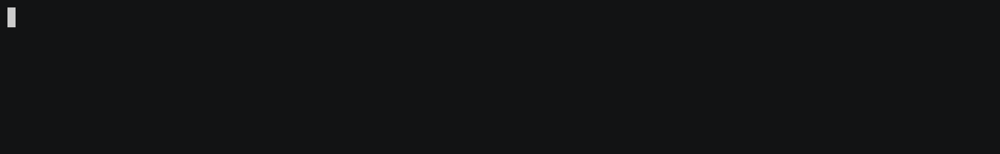

confirm.py
confirm(message, default=True, qmark='?', style=None, auto_enter=True, instruction=None, qcount=None, **kwargs)
¶
A yes or no question. The user can either confirm or deny.
This question type can be used to prompt the user for a confirmation of a yes-or-no question. If the user just hits enter, the default value will be returned.
Examples:
>>> import questionary
>>> questionary.confirm("Are you amazed?").ask()
? Are you amazed? Yes
True

This is just a really basic example, the prompt can be customised using the parameters.
Parameters:
| Name | Type | Description | Default |
|---|---|---|---|
message |
Union[str, List[Tuple[str, str]], List[Tuple[str, str, Callable[[Any], NoneType]]]] |
Question text. |
required |
default |
bool |
Default value will be returned if the user just hits enter. |
True |
qmark |
Union[str, List[Tuple[str, str]], List[Tuple[str, str, Callable[[Any], NoneType]]]] |
Question prefix displayed in front of the question.
By default this is a |
'?' |
style |
Optional[prompt_toolkit.styles.style.Style] |
A custom color and style for the question parts. You can configure colors as well as font types for different elements. |
None |
auto_enter |
bool |
If set to |
True |
instruction |
Optional[str] |
A message describing how to proceed through the confirmation prompt. |
None |
Returns:
| Type | Description |
|---|---|
[Question]() |
Question instance, ready to be prompted (using |
Source code in krupy/questionary/prompts/confirm.py
def confirm(
message: AnyFormattedText,
default: bool = True,
qmark: AnyFormattedText = DEFAULT_QUESTION_PREFIX,
style: Optional[Style] = None,
auto_enter: bool = True,
instruction: Optional[str] = None,
qcount: Optional[str] = None,
**kwargs: Any,
) -> Question:
"""A yes or no question. The user can either confirm or deny.
This question type can be used to prompt the user for a confirmation
of a yes-or-no question. If the user just hits enter, the default
value will be returned.
Example:
>>> import questionary
>>> questionary.confirm("Are you amazed?").ask()
? Are you amazed? Yes
True
<img alt="../../../../images/confirm.gif" src="../../../../images/confirm.gif">
This is just a really basic example, the prompt can be customised using the
parameters.
Args:
message: Question text.
default: Default value will be returned if the user just hits
enter.
qmark: Question prefix displayed in front of the question.
By default this is a ``?``.
style: A custom color and style for the question parts. You can
configure colors as well as font types for different elements.
auto_enter: If set to `False`, the user needs to press the 'enter' key to
accept their answer. If set to `True`, a valid input will be
accepted without the need to press 'Enter'.
instruction: A message describing how to proceed through the
confirmation prompt.
Returns:
[Question](): Question instance, ready to be prompted (using `.ask()`).
"""
merged_style = merge_styles_default([style])
status = {"answer": None, "complete": False}
def get_prompt_tokens():
tokens = []
if qcount is not None:
tokens.append(("class:qcount", "{} ".format(qcount)))
if isinstance(qmark, list):
for x in qmark:
tokens.append((x[0], "{}".format(x[1])))
tokens.append(("class:qmark", " {}".format("")))
elif isinstance(qmark, str) and len(qmark.strip()) > 0:
tokens.append(("class:qmark", "{} ".format(qmark)))
if isinstance(message, list):
for x in message:
tokens.append((x[0], "{}".format(x[1])))
elif isinstance(message, str) and len(message.strip()) > 0:
tokens.append(("class:question", "{}".format(message)))
tokens.append(("class:question", " {}".format("\n")))
if instruction is not None:
tokens.append(("class:instruction", instruction))
elif not status["complete"]:
_instruction = YES_OR_NO if default else NO_OR_YES
tokens.append(("class:instruction", "{} ".format(_instruction)))
if status["answer"] is not None:
answer = YES if status["answer"] else NO
tokens.append(("class:answer", answer))
return to_formatted_text(tokens)
def exit_with_result(event):
status["complete"] = True
event.app.exit(result=status["answer"])
bindings = KeyBindings()
@bindings.add(Keys.ControlQ, eager=True)
@bindings.add(Keys.ControlC, eager=True)
def _(event):
event.app.exit(exception=KeyboardInterrupt, style="class:aborting")
@bindings.add("n")
@bindings.add("N")
def key_n(event):
status["answer"] = False
if auto_enter:
exit_with_result(event)
@bindings.add("y")
@bindings.add("Y")
def key_y(event):
status["answer"] = True
if auto_enter:
exit_with_result(event)
@bindings.add(Keys.ControlH)
def key_backspace(event):
status["answer"] = None
@bindings.add(Keys.ControlM, eager=True)
def set_answer(event):
if status["answer"] is None:
status["answer"] = default
exit_with_result(event)
@bindings.add(Keys.Any)
def other(event):
"""Disallow inserting other text."""
return Question(
PromptSession(
get_prompt_tokens, key_bindings=bindings, style=merged_style, **kwargs
).app
)